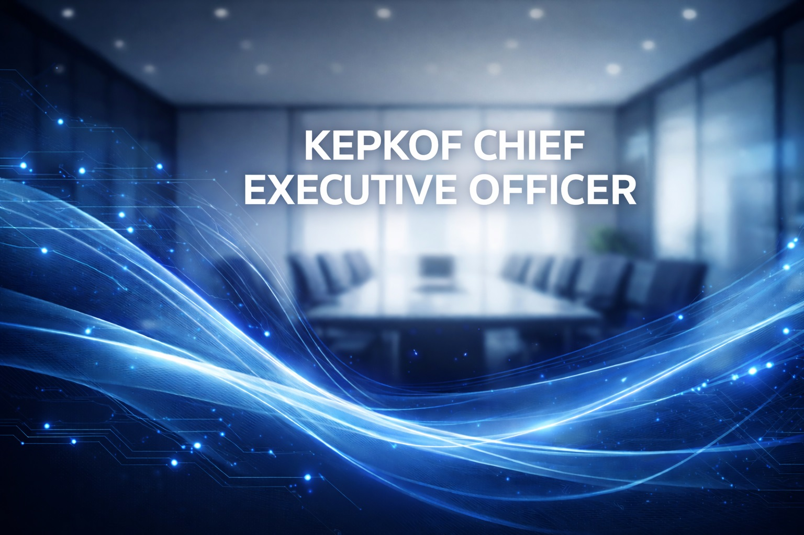

Strategic focus
Builds a resilient playbook that keeps growth disciplined, while keeping the leadership team energized by sharing wins and lessons.
- Partnering with global suppliers
- Embedding customer obsession
- Championing operational excellence
Executive Leadership
Chief Executive Officer
Steers KEPKOF's mission with a culture-first lens, keeping teams aligned to the growth plan while unlocking new partnerships across the region.

Builds a resilient playbook that keeps growth disciplined, while keeping the leadership team energized by sharing wins and lessons.
Launched a refreshed SaaS-enabled retail model that trimmed time-to-market and raised partner satisfaction scores by 18%.
Leads through visibility, encouraging experimentation and investing in talent growth paths that keep people ahead of industry change.
Oversaw supply chain and retail operations for a regional electronics partner.
Named Vice President of Strategy, reshaping how KEPKOF measures success.
Appointed CEO, purposefully scaling the company while keeping the culture grounded.
Maintains clarity across the organization, ensuring every launch, product, and regional expansion links back to the long-term north star.